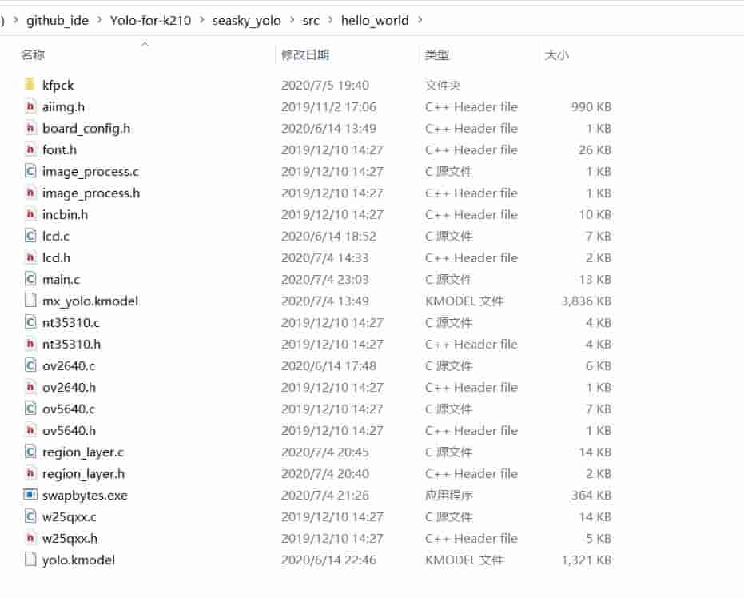
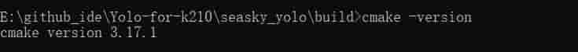
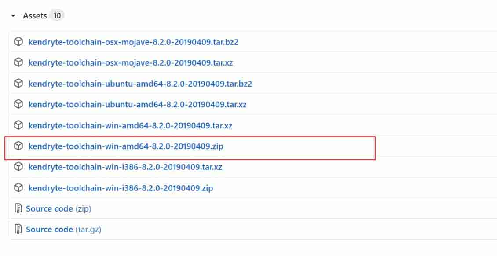
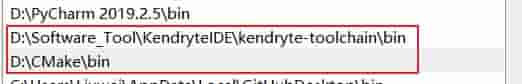
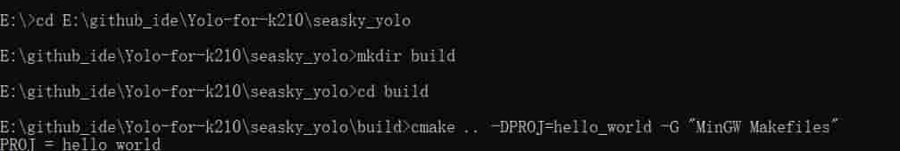
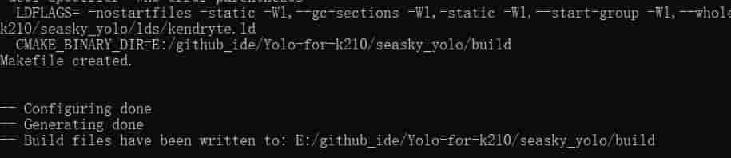

代码基于Kendryte K210 standalone SDK开发、有修改 SDK 中部分代码。
除 SDK 外的代码位于xx/src/hello_world,如果你需要使用自己的代码可以删除 hello_world 目录下的代码，然后将自己代码复制到该目录。

下面开始进入正题
打开一个新的 cmd 窗口，输入 cmake –version 命令，若看到如下信息说明设置正确。

从Kendryte Github下载 Windows 版本工具链。 打开网页后展开 Assets 可看到下载链接。 
配置环境变量 
重新打开一个 cmd 窗口，输入 riscv64-unknown-elf-gcc –v命令，看到如下信息说明编译器设置正确。
 到此开发环境搭建完成
到此开发环境搭建完成
同时你还需要安装win下cmake依赖的编译工具、否则你将无法使用make，因此你还需要安装MingW，安装过程自己百度一下
注意：开始之前你需要删除 build 目录，同理如果你将完整的正常的代码复制到其他目录，然后重新编译，也需要先删除 build 目录
mkdir build创建目录cd build跳转到build目录运行cmake
cmake .. –DPROJ=hello_world –G “MinGW Makefiles”
 如果输出以下结果正常 
在build目录下编译
make -j

编译后 build 目录下会生成hello_world.bin文件
使用 k-flash-gui 下载hello_world.bin到开发板

cmake和toolchain进行编译的,所以你可以选择你常用的代码编辑器去修改它。Visual Studio Code如果你的 LCD 出现反色的现象 请注释掉以下内容
for(i = 0; i < tx_len; i++)
{
buf[i] = buf[i] ^ 0xFFFFFFFF;
}
该代码位于 spi.c 第 425 到第 428 行
./lib/drivers/spi.c

原作者在 ubuntu 18.04 - Python 3.7.1 中进行测试 ,
本人尝试可以在 windows 正常训练,你需要安装 requirements.txt 中的内容
优先安装 tensorflow-gpu==1.15.0,如果你的电脑不支持 GPU 版本，请安装 tensorflow==1.15.0

请在 tensorflow 环境搭建完成后继续向下操作，tensorflow 环境搭建参见百度
然后使用pip install -r requirements.txt安装其他工具
首次使用（确保你获取到了数据集）：
准备数据集
数据集须存放在/Train_Image/MyImage
 然后使用python生成需要的文件
然后使用python生成需要的文件
datamaking.py
仅根据Annotations和JPEGImages目录
生成pscalvoc.txt、train.txt、val.txt、test.txt
同时会删除多余或不配对的 .xml .jpg 运行时间较长
数据按7：2：1分配
datamakingv2.py
仅根据Annotations目录下文件的.xml文件生成需要的pscalvoc.txt、train.txt、val.txt、test.txt
运行时间较短，适用于确认数据集一一对应的情况
生成label
python voc_label.py
cat MyImage_train.txt MyImage_val.txt> train.txt Linux使用此命令
type MyImage_train.txt MyImage_val.txt> train.txt windowns使用此命令
注意：
改变路径后重新训练需从python voc_label.py从新开始
win 不支持 wget，因此你需要安装相关工具，或直接在浏览器中输入 wget 后面的网址，下载后复制到改目录
然后将 IMG 路径和注释合并到一个 NPY 文件
python make_voc_list.py train.txt data/voc_img_ann.npy
加载注释生成 anchors(LOW 和 HIGH 视数据集的分布而定)：
make anchors DATASET=voc ANCNUM=3 LOW="0.0 0.0" HIGH="1.0 1.0"
当你成功的时候，你会看到这样以下内容：

注：结果是随机的。当你有错误时，就重新运行它。
如果要使用自定义数据集，只需编写脚本并生成data/{dataset_name}_img_ann.npy，然后使用make anchors DATASET=dataset_name。更多选项请参见python3 ./make_anchor_list.py -h
如果要更改输出层的数目，则应修改 OUTSIZE 在 Makefile
你必须下载您想要训练的模型权重，因为默认情况下会加载训练前的权重。把文件放进./data 目录。
MODEL |
DEPTHMUL |
Url | Url |
|---|---|---|---|
| yolo_mobilev1 | 0.5 | google drive | weiyun |
| yolo_mobilev1 | 0.75 | google drive | weiyun |
| yolo_mobilev1 | 1.0 | google drive | weiyun |
| yolo_mobilev2 | 0.5 | google drive | weiyun |
| yolo_mobilev2 | 0.75 | google drive | weiyun |
| yolo_mobilev2 | 1.0 | google drive | weiyun |
| tiny_yolo | google drive | weiyun | |
| yolo | google drive | weiyun |
注：mobilev 不是原创的，原作者有修改它适合 K210
使用 Mobileenet 时，需要指定 DEPTHMUL 参数。 使用 tiny yolo 或 yolo 你不需要设定 DEPTHMUL.
集MODEL和DEPTHMUL开始训练： make train MODEL=yolo_mobilev1 DEPTHMUL=0.75 MAXEP=10 ILR=0.001 DATASET=voc CLSNUM=20 IAA=False BATCH=8
集CKPT继续训练:
make train MODEL=yolo_mobilev1 DEPTHMUL=0.75 MAXEP=10 ILR=0.001 DATASET=voc CLSNUM=20 IAA=False BATCH=8 CKPT=log/xxxxxxxxx/yolo_model.h5
集IAA为了增加数据:
make train MODEL=xxxx DEPTHMUL=xx MAXEP=10 ILR=0.0001 DATASET=voc CLSNUM=20 IAA=True BATCH=16 CKPT=log/xxxxxxxxx/yolo_model.h5
使用 tensorboard:
tensorboard --logdir log
make inference MODEL=yolo_mobilev1 DEPTHMUL=0.75 CLSNUM=20 CKPT=log/xxxxxx/yolo_model.h5 IMG=data/people.jpg
你可以尝试我的模型：
make inference MODEL=yolo_mobilev1 DEPTHMUL=0.75 CKPT=asset/yolo_model.h5 IMG=data/people.jpg

make inference MODEL=yolo_mobilev1 DEPTHMUL=0.75 CKPT=asset/yolo_model.h5 IMG=data/dog.jpg
注：由于 anchors 是随机生成的，如果您的结果与上面的图像不同，你只需要加载这个模型并继续训练一段时间。
更多选项请参见python3 ./keras_inference.py -h
make train MODEL=xxxx MAXEP=1 ILR=0.0003 DATASET=voc CLSNUM=20 BATCH=16 PRUNE=True CKPT=log/xxxxxx/yolo_model.h5 END_EPOCH=1
训练结束时，将模型保存为 log/xxxxxx/yolo_prune_model.h5.
toco --output_file mobile_yolo.tflite --keras_model_file log/xxxxxx/yolo_model.h5
现在你有了 mobile_yolo.tflite
Please refer nncase v0.1.0-RC5 example
ncc mobile_yolo.tflite mobile_yolo.kmodel -i tflite -o k210model --dataset nncase_images